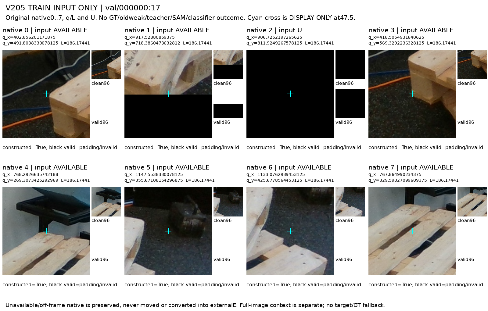
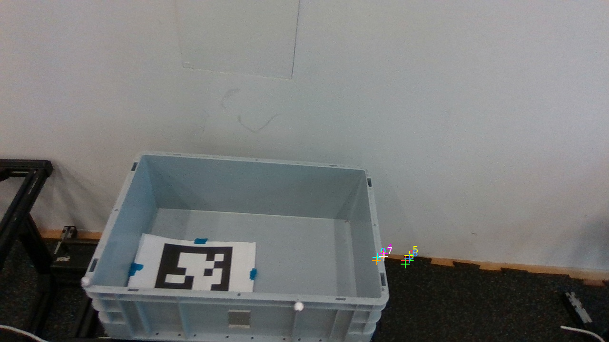
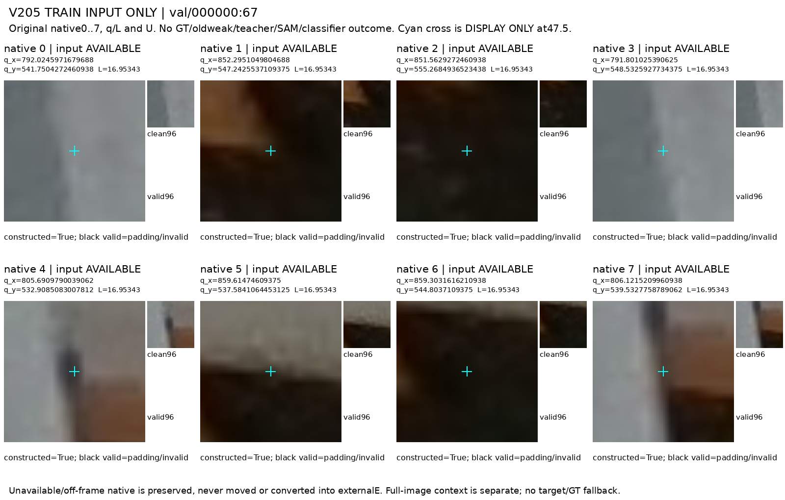
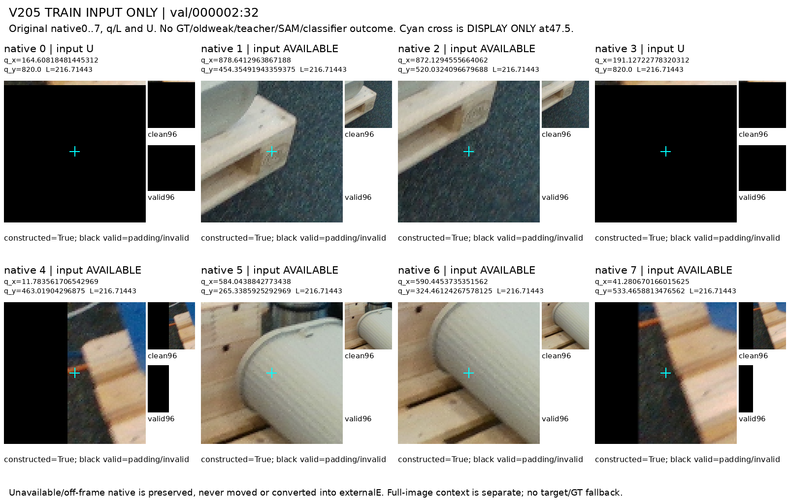
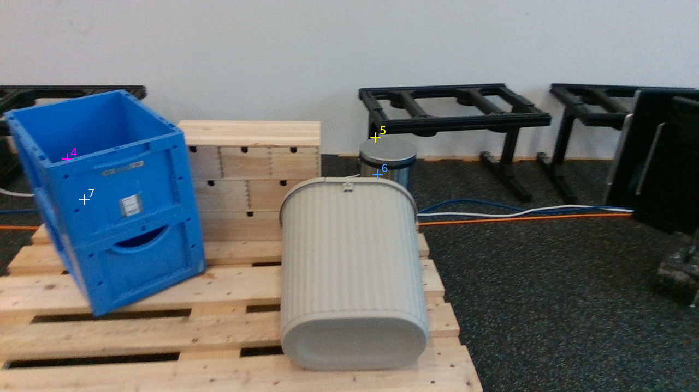
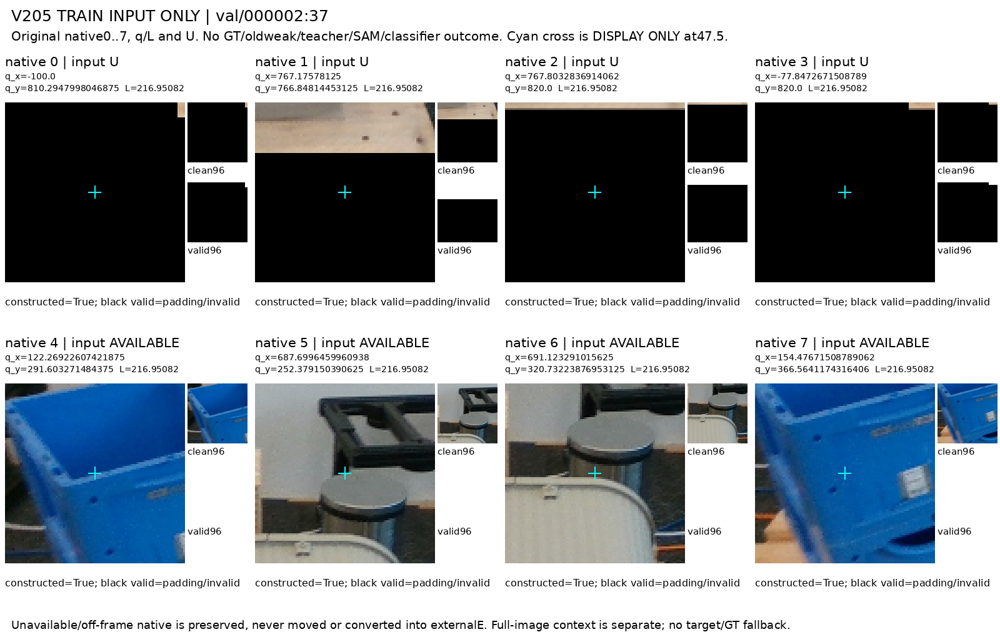
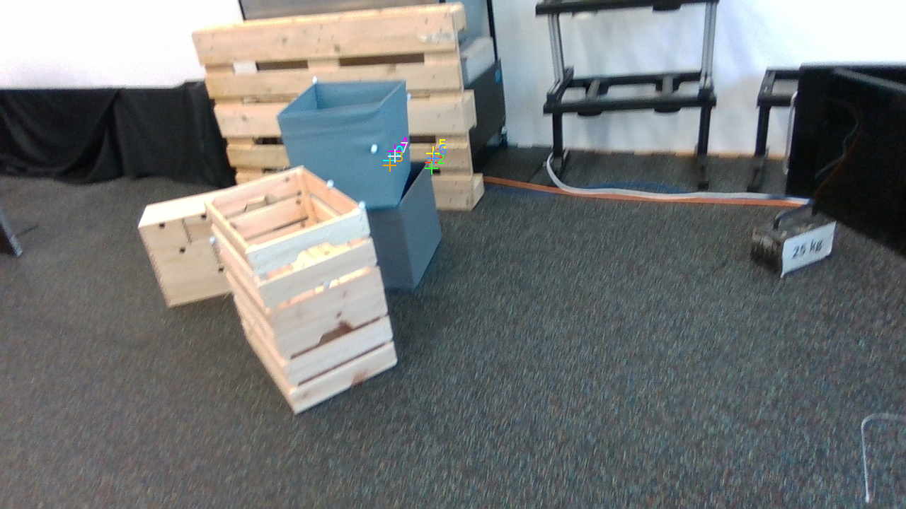
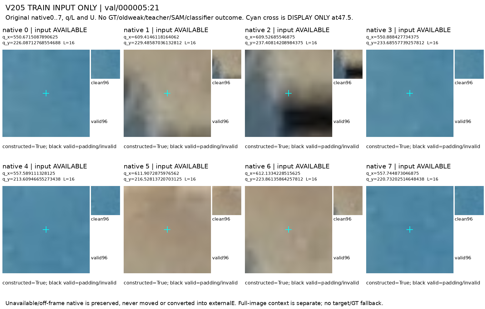
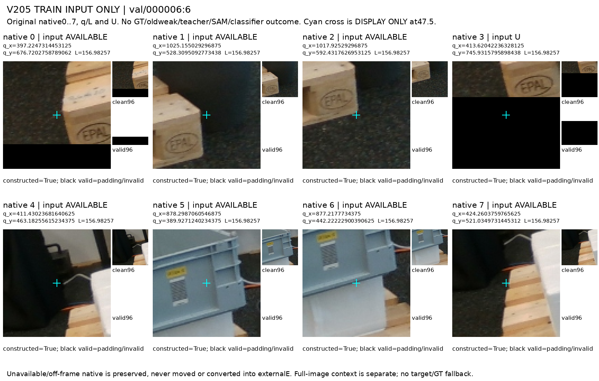

Original q/L/native/U unchanged. No fit, model scores, GT or protected evaluation. These are two assistant weak observations, not human gold or model accuracy.
고정 6프레임 / 48 native / 원 U8. 엄격한 약합의 후보: D 1, E 0. 학습 채택 0.
별도 축별 기술 집계: 같은 D 11, 같은 E 1; 같은 D+같은 ON/NEAR 8 중 위치 가능성 표시 불일치 7. LOCATION_ERROR_OR_OFF 수는 확인된 좌표 오류 수가 아닙니다. 사전 규칙 변경·새 학습 채택이 아닙니다.
| 결합 분류 | 수 |
|---|---|
| ALIGNED_WEAK_CONSENSUS_CANDIDATE | 1 |
| DISAGREEMENT_OR_UNRESOLVED | 1 |
| INSUFFICIENT_ALIGNED_EVIDENCE | 1 |
| LOCATION_ERROR_OR_OFF | 37 |
| ORIGINAL_INPUT_U | 8 |


| Native / available | A state / query / location | C state / query / location | Join | A visual evidence | C visual evidence |
|---|---|---|---|---|---|
| 0 / True | D / NEAR / NO | D / NEAR / YES | LOCATION_ERROR_OR_OFF | 선택 목재 팔레트의 왼쪽 앞 상판 끝과 얇은 끝면이 원 crop 오른쪽에 연속해 보인다. cross는 그 끝 바로 바깥 바닥 쪽이다. | 상단 팔레트의 앞 왼쪽 상판 끝과 아래 목재 지지가 crop 안에 드러난다. q는 끝의 바로 왼쪽 배경에 있다. |
| 1 / True | D / NEAR / UNKNOWN | D / NEAR / YES | LOCATION_ERROR_OR_OFF | 앞 오른쪽 상판 끝·옆면이 원 crop 위쪽에 보이며 q는 영상 하단 경계에 있다. 아래쪽 padding 때문에 더 아래의 형태는 판정하지 않았다. | 상단 팔레트의 앞 오른쪽 상판/측면 끝이 crop 상부에 식별된다. q는 원영상 하단 경계 부근이며 패딩을 별도 취급했다. |
| 2 / False | UNKNOWN / UNKNOWN / UNKNOWN | UNKNOWN / UNKNOWN / UNKNOWN | ORIGINAL_INPUT_U | 원 original_query_available=False인 입력 U이다. 생성 contact를 보았더라도 보이는 주변 재료/전경을 근거로 D/E/S 또는 위치 gold로 승격하지 않고 UNKNOWN을 유지했다. | 원본 input U를 그대로 UNKNOWN으로 보존했다. 주변 crop 일부가 보여도 semantic 판단/가용성 보충을 하지 않았다. |
| 3 / True | D / NEAR / NO | D / NEAR / YES | LOCATION_ERROR_OR_OFF | 왼쪽 앞 지지블록과 상판 끝의 연결이 원 crop에 보인다. cross는 블록 외곽 바로 왼쪽/아래이다. | 상단 팔레트 앞 왼쪽의 세로 목재 지지 끝이 crop에 보인다. q는 그 왼쪽 바닥 쪽에 가깝다. |
| 4 / True | D / NEAR / NO | D / NEAR / YES | LOCATION_ERROR_OR_OFF | 뒤쪽 왼쪽 상판 끝이 원 crop에서 식별된다. 위쪽 검은 스탠드와 분리되는 목재 끝 윤곽이 보인다. | 상단 팔레트 뒤 왼쪽의 노출된 상판 끝을 full q8 맥락과 crop에서 식별한다. q는 그 끝의 바로 위/왼쪽이다. |
| 5 / True | D / OFF / YES | UNKNOWN / OFF / YES | LOCATION_ERROR_OR_OFF | q는 바닥에 있지만 원 crop 왼쪽 가장자리에는 선택 팔레트의 뒤 오른쪽 상판 끝 윤곽이 들어온다. 부위의 국소 가시성과 q 위치 불일치를 따로 기록한다. | q와 crop 중심은 팔레트 오른쪽 바닥/추 부근이다. crop 가장자리 목재만으로 해당 native 끝을 확정하지 않았다. |
| 6 / True | UNKNOWN / OFF / YES | UNKNOWN / OFF / YES | LOCATION_ERROR_OR_OFF | cross는 상판과 아래쪽 목재 사이의 바닥에 있다. crop에 여러 목재 끝이 보이나 요청된 아래쪽 뒤 끝부위를 하나로 식별하지 못했다. 단순 바닥을 외부 가림 E로 바꾸지 않았다. | q는 두 팔레트 오른쪽의 바닥 쪽이다. crop의 목재가 상단 목표의 해당 끝인지 아래 팔레트인지 명확하지 않다. |
| 7 / True | UNKNOWN / UNKNOWN / UNKNOWN | UNKNOWN / UNKNOWN / YES | LOCATION_ERROR_OR_OFF | 선택 팔레트의 뒤쪽 상판들과 틈은 보이지만 요청된 아래쪽 끝부위와 직접 결부하기 어렵다. 자기 구조에 숨었을 가능성만으로 S를 확정하지 않았다. | q는 상단 팔레트의 긴 상판 위에 있으나 요청된 아래/뒤 끝 자체는 이 crop에서 분리해 식별하기 어렵다. 주변 목재를 D나 S로 승격하지 않았다. |


| Native / available | A state / query / location | C state / query / location | Join | A visual evidence | C visual evidence |
|---|---|---|---|---|---|
| 0 / True | UNKNOWN / UNKNOWN / YES | UNKNOWN / UNKNOWN / YES | LOCATION_ERROR_OR_OFF | q와 작은 원 crop에는 회색 플라스틱 상자의 옆면이 보인다. full frame에서도 q8에 대응하는 선택 팔레트와 그 끝부위를 식별하지 못했다. | q8이 회색 플라스틱 상자의 오른쪽 좁은 영역/배경에 몰려 있다. 이 맥락에서 목표 팔레트와 요청된 native 부위를 식별하지 못하며 다른 물체/배경을 E로 바꾸지 않는다. |
| 1 / True | UNKNOWN / UNKNOWN / YES | UNKNOWN / UNKNOWN / YES | LOCATION_ERROR_OR_OFF | 원 crop은 벽의 걸레받이와 어두운 바닥 경계이다. 팔레트 끝부위 식별이 없어 외부 가림이나 가시 D로 판정하지 않았다. | q8이 회색 플라스틱 상자의 오른쪽 좁은 영역/배경에 몰려 있다. 이 맥락에서 목표 팔레트와 요청된 native 부위를 식별하지 못하며 다른 물체/배경을 E로 바꾸지 않는다. |
| 2 / True | UNKNOWN / UNKNOWN / YES | UNKNOWN / UNKNOWN / YES | LOCATION_ERROR_OR_OFF | cross 주변은 어두운 바닥이다. 팔레트가 보이지 않는다는 이유를 E로 사용하지 않았다. | q8이 회색 플라스틱 상자의 오른쪽 좁은 영역/배경에 몰려 있다. 이 맥락에서 목표 팔레트와 요청된 native 부위를 식별하지 못하며 다른 물체/배경을 E로 바꾸지 않는다. |
| 3 / True | UNKNOWN / UNKNOWN / YES | UNKNOWN / UNKNOWN / YES | LOCATION_ERROR_OR_OFF | cross 주변은 회색 상자의 측면이다. 팔레트 native 끝부위로 연결할 시각적 근거가 없다. | q8이 회색 플라스틱 상자의 오른쪽 좁은 영역/배경에 몰려 있다. 이 맥락에서 목표 팔레트와 요청된 native 부위를 식별하지 못하며 다른 물체/배경을 E로 바꾸지 않는다. |
| 4 / True | UNKNOWN / UNKNOWN / YES | UNKNOWN / UNKNOWN / YES | LOCATION_ERROR_OR_OFF | 회색 상자 오른쪽 가장자리와 벽/걸레받이가 보인다. 선택 팔레트의 특정 부위로 식별되지 않는다. | q8이 회색 플라스틱 상자의 오른쪽 좁은 영역/배경에 몰려 있다. 이 맥락에서 목표 팔레트와 요청된 native 부위를 식별하지 못하며 다른 물체/배경을 E로 바꾸지 않는다. |
| 5 / True | UNKNOWN / UNKNOWN / YES | UNKNOWN / UNKNOWN / YES | LOCATION_ERROR_OR_OFF | 벽 아래와 걸레받이/바닥만 보이며, 원 q8의 작은 묶음으로 선택 팔레트를 식별하지 못했다. | q8이 회색 플라스틱 상자의 오른쪽 좁은 영역/배경에 몰려 있다. 이 맥락에서 목표 팔레트와 요청된 native 부위를 식별하지 못하며 다른 물체/배경을 E로 바꾸지 않는다. |
| 6 / True | UNKNOWN / UNKNOWN / YES | UNKNOWN / UNKNOWN / YES | LOCATION_ERROR_OR_OFF | 작은 crop의 중심은 바닥이며 위쪽은 벽 아래 경계이다. 부위 부재와 외부 가림을 구별해 UNKNOWN으로 남겼다. | q8이 회색 플라스틱 상자의 오른쪽 좁은 영역/배경에 몰려 있다. 이 맥락에서 목표 팔레트와 요청된 native 부위를 식별하지 못하며 다른 물체/배경을 E로 바꾸지 않는다. |
| 7 / True | UNKNOWN / UNKNOWN / YES | UNKNOWN / UNKNOWN / YES | LOCATION_ERROR_OR_OFF | 회색 상자의 세로 가장자리, 벽과 바닥이 함께 보인다. 의도된 팔레트 끝부위는 식별되지 않는다. | q8이 회색 플라스틱 상자의 오른쪽 좁은 영역/배경에 몰려 있다. 이 맥락에서 목표 팔레트와 요청된 native 부위를 식별하지 못하며 다른 물체/배경을 E로 바꾸지 않는다. |


| Native / available | A state / query / location | C state / query / location | Join | A visual evidence | C visual evidence |
|---|---|---|---|---|---|
| 0 / False | UNKNOWN / UNKNOWN / UNKNOWN | UNKNOWN / UNKNOWN / UNKNOWN | ORIGINAL_INPUT_U | 원 original_query_available=False인 입력 U이다. 생성 contact를 보았더라도 보이는 주변 재료/전경을 근거로 D/E/S 또는 위치 gold로 승격하지 않고 UNKNOWN을 유지했다. | 원본 input U를 그대로 UNKNOWN으로 보존했다. 주변 crop 일부가 보여도 semantic 판단/가용성 보충을 하지 않았다. |
| 1 / True | D / ON / NO | D / ON / NO | ALIGNED_WEAK_CONSENSUS_CANDIDATE | 선택 팔레트 오른쪽 앞 끝의 상판과 지지블록 외곽이 연속해 보인다. cross는 그 목재 끝/블록 부근에 놓인다. | 앞 오른쪽 노출 목재 블록과 끝면이 q 부근 및 crop에 뚜렷하다. 위 회색 통과 별개로 이 끝은 보인다. |
| 2 / True | D / OFF / YES | D / OFF / YES | LOCATION_ERROR_OR_OFF | 선택 팔레트 오른쪽 앞 아래 끝과 바닥 경계가 원 crop 왼쪽 위에 보인다. cross 자체는 그 아래 바닥에 있으므로 q OFF를 별도 기록한다. | 앞 오른쪽 아래 끝면은 crop 위쪽에서 보이지만 q 중심은 그 아래 바닥에 놓여 있다. 가시성과 q 위치를 분리했다. |
| 3 / False | UNKNOWN / UNKNOWN / UNKNOWN | UNKNOWN / UNKNOWN / UNKNOWN | ORIGINAL_INPUT_U | 원 original_query_available=False인 입력 U이다. 생성 contact를 보았더라도 보이는 주변 재료/전경을 근거로 D/E/S 또는 위치 gold로 승격하지 않고 UNKNOWN을 유지했다. | 원본 input U를 그대로 UNKNOWN으로 보존했다. 주변 crop 일부가 보여도 semantic 판단/가용성 보충을 하지 않았다. |
| 4 / True | D / NEAR / NO | D / OFF / YES | LOCATION_ERROR_OR_OFF | 화면 왼쪽 경계에 걸친 뒤쪽 상판 끝이 crop 오른쪽에 보인다. 파란 상자와 별개인 목재 바깥 끝 윤곽을 확인했다. | 왼쪽 뒤의 노출된 팔레트 상판 끝이 crop 위/오른쪽에 보인다. q는 그보다 왼쪽/아래 배경에 있다. |
| 5 / True | E / NEAR / UNKNOWN | E / UNKNOWN / UNKNOWN | INSUFFICIENT_ALIGNED_EVIDENCE | full q8와 상판 외곽으로 따라간 뒤쪽 오른쪽 끝부위 자리 앞을 기울어진 회색 통과 뒤의 목재 상자가 막는다. crop에는 불투명 통의 몸체와 목재 경계가 보인다. 정확한 3D 꼭짓점이나 q 위치의 gold 보증은 아니다. | full q8와 노출 상판의 이어짐으로 목표 팔레트의 뒤 오른쪽 끝 영역을 약하게 식별한다. 그 영역 앞에 누운 회색 통이 있고 crop은 통 표면/경계와 뒤 나무상자를 보인다. 정확한 q-숨은 끝의 위치 관계는 확정하지 않았다. |
| 6 / True | UNKNOWN / UNKNOWN / UNKNOWN | E / UNKNOWN / UNKNOWN | DISAGREEMENT_OR_UNRESOLVED | 원 crop에 회색 통과 목재 상자 및 일부 상판이 보이지만 아래쪽 뒤 끝부위의 위치·정체를 충분히 분리하지 못했다. 외부 전경이 있다는 사실만으로 E를 부여하지 않았다. | 뒤 오른쪽 아래 끝 영역은 노출 팔레트 면의 연속성과 q8 맥락으로 약하게 식별되며 crop에서는 누운 회색 통이 그 영역 앞을 차지한다. 가려진 끝의 정확한 좌표는 인증하지 않는다. |
| 7 / True | UNKNOWN / UNKNOWN / UNKNOWN | D / NEAR / YES | LOCATION_ERROR_OR_OFF | 왼쪽 목재 외곽과 상판들은 보이지만 요청된 아래쪽 뒤 끝부위로 확정할 연결이 부족하다. 다른 상판 재료의 가시성을 D로 대신하지 않았다. | 팔레트 왼쪽 뒤의 아래쪽 가장자리/목재 끝이 crop 오른쪽에 드러난다. q는 그 왼쪽 경계 밖에 가깝다. |


| Native / available | A state / query / location | C state / query / location | Join | A visual evidence | C visual evidence |
|---|---|---|---|---|---|
| 0 / False | UNKNOWN / UNKNOWN / UNKNOWN | UNKNOWN / UNKNOWN / UNKNOWN | ORIGINAL_INPUT_U | 원 original_query_available=False인 입력 U이다. 생성 contact를 보았더라도 보이는 주변 재료/전경을 근거로 D/E/S 또는 위치 gold로 승격하지 않고 UNKNOWN을 유지했다. | 원본 input U를 그대로 UNKNOWN으로 보존했다. 주변 crop 일부가 보여도 semantic 판단/가용성 보충을 하지 않았다. |
| 1 / False | UNKNOWN / UNKNOWN / UNKNOWN | UNKNOWN / UNKNOWN / UNKNOWN | ORIGINAL_INPUT_U | 원 original_query_available=False인 입력 U이다. 생성 contact를 보았더라도 보이는 주변 재료/전경을 근거로 D/E/S 또는 위치 gold로 승격하지 않고 UNKNOWN을 유지했다. | 원본 input U를 그대로 UNKNOWN으로 보존했다. 주변 crop 일부가 보여도 semantic 판단/가용성 보충을 하지 않았다. |
| 2 / False | UNKNOWN / UNKNOWN / UNKNOWN | UNKNOWN / UNKNOWN / UNKNOWN | ORIGINAL_INPUT_U | 원 original_query_available=False인 입력 U이다. 생성 contact를 보았더라도 보이는 주변 재료/전경을 근거로 D/E/S 또는 위치 gold로 승격하지 않고 UNKNOWN을 유지했다. | 원본 input U를 그대로 UNKNOWN으로 보존했다. 주변 crop 일부가 보여도 semantic 판단/가용성 보충을 하지 않았다. |
| 3 / False | UNKNOWN / UNKNOWN / UNKNOWN | UNKNOWN / UNKNOWN / UNKNOWN | ORIGINAL_INPUT_U | 원 original_query_available=False인 입력 U이다. 생성 contact를 보았더라도 보이는 주변 재료/전경을 근거로 D/E/S 또는 위치 gold로 승격하지 않고 UNKNOWN을 유지했다. | 원본 input U를 그대로 UNKNOWN으로 보존했다. 주변 crop 일부가 보여도 semantic 판단/가용성 보충을 하지 않았다. |
| 4 / True | UNKNOWN / OFF / YES | UNKNOWN / UNKNOWN / YES | LOCATION_ERROR_OR_OFF | 선택 팔레트는 full frame 아래에 보이지만 q와 원 crop 중심은 파란 플라스틱 상자이다. 이 crop에서 대응하는 팔레트 끝부위를 식별하지 못했다. | 하단 팔레트는 식별되지만 available q는 파란 상자 또는 뒤 쓰레기통 부근이다. 요청된 팔레트 끝이 이 국소 crop에서 식별되지 않아 외부물체 존재만으로 E를 주지 않는다. |
| 5 / True | UNKNOWN / OFF / YES | UNKNOWN / UNKNOWN / YES | LOCATION_ERROR_OR_OFF | q는 뒤쪽 검은 스탠드/작은 쓰레기통 뚜껑 부근이다. 원 crop에서 팔레트의 의도 끝부위가 식별되지 않아 빈자리나 전경 물체를 E로 치환하지 않았다. | 하단 팔레트는 식별되지만 available q는 파란 상자 또는 뒤 쓰레기통 부근이다. 요청된 팔레트 끝이 이 국소 crop에서 식별되지 않아 외부물체 존재만으로 E를 주지 않는다. |
| 6 / True | UNKNOWN / OFF / YES | UNKNOWN / UNKNOWN / YES | LOCATION_ERROR_OR_OFF | crop에는 작은 회색 통과 앞쪽 큰 통의 윗부분이 있다. 선택 팔레트는 아래에 있으나 요청된 끝부위가 crop 안에서 확인되지 않는다. | 하단 팔레트는 식별되지만 available q는 파란 상자 또는 뒤 쓰레기통 부근이다. 요청된 팔레트 끝이 이 국소 crop에서 식별되지 않아 외부물체 존재만으로 E를 주지 않는다. |
| 7 / True | UNKNOWN / OFF / YES | UNKNOWN / UNKNOWN / YES | LOCATION_ERROR_OR_OFF | q는 파란 상자의 앞면이다. crop 가장자리 일부 목재만으로 원 native 끝부위를 식별할 수 없어 D/E/S를 보류했다. | 하단 팔레트는 식별되지만 available q는 파란 상자 또는 뒤 쓰레기통 부근이다. 요청된 팔레트 끝이 이 국소 crop에서 식별되지 않아 외부물체 존재만으로 E를 주지 않는다. |


| Native / available | A state / query / location | C state / query / location | Join | A visual evidence | C visual evidence |
|---|---|---|---|---|---|
| 0 / True | UNKNOWN / UNKNOWN / YES | UNKNOWN / UNKNOWN / YES | LOCATION_ERROR_OR_OFF | q와 L16 crop은 파란 플라스틱 용기 표면이다. 뒤의 큰 세워진 팔레트와 이 작은 q8 묶음 사이에서 선택 인스턴스/끝부위를 결부하지 못했다. | 뒤에 세운 목재 팔레트는 보이지만 q8이 작은 영역에 압축되어 있다. 파란 통 또는 넓은 목재 표면만으로 각 native 끝의 대응을 구분할 수 없다. |
| 1 / True | UNKNOWN / UNKNOWN / YES | UNKNOWN / UNKNOWN / YES | LOCATION_ERROR_OR_OFF | 작은 crop에는 뒤쪽 목재와 용기 가장자리가 보인다. 목재가 있다는 사실만으로 선택 팔레트의 특정 끝부위 D로 판정하지 않았다. | 뒤에 세운 목재 팔레트는 보이지만 q8이 작은 영역에 압축되어 있다. 파란 통 또는 넓은 목재 표면만으로 각 native 끝의 대응을 구분할 수 없다. |
| 2 / True | UNKNOWN / UNKNOWN / YES | UNKNOWN / UNKNOWN / YES | LOCATION_ERROR_OR_OFF | 원 crop은 파란 용기 가장자리와 뒤 목재/검은 틈이다. 원 q8의 작은 배치에서 의도된 팔레트 끝을 식별할 근거가 부족하다. | 뒤에 세운 목재 팔레트는 보이지만 q8이 작은 영역에 압축되어 있다. 파란 통 또는 넓은 목재 표면만으로 각 native 끝의 대응을 구분할 수 없다. |
| 3 / True | UNKNOWN / UNKNOWN / YES | UNKNOWN / UNKNOWN / YES | LOCATION_ERROR_OR_OFF | 중심은 파란 용기 표면이다. 선택 팔레트 자체의 부위를 식별하지 못했으므로 외부 가림도 확정하지 않았다. | 뒤에 세운 목재 팔레트는 보이지만 q8이 작은 영역에 압축되어 있다. 파란 통 또는 넓은 목재 표면만으로 각 native 끝의 대응을 구분할 수 없다. |
| 4 / True | UNKNOWN / UNKNOWN / YES | UNKNOWN / UNKNOWN / YES | LOCATION_ERROR_OR_OFF | q 주위는 파란 용기 표면과 가장자리이다. 팔레트 끝의 관찰이 아닌 다른 물체 표면으로 보이며 인스턴스 대응은 불확실하다. | 뒤에 세운 목재 팔레트는 보이지만 q8이 작은 영역에 압축되어 있다. 파란 통 또는 넓은 목재 표면만으로 각 native 끝의 대응을 구분할 수 없다. |
| 5 / True | UNKNOWN / UNKNOWN / YES | UNKNOWN / UNKNOWN / YES | LOCATION_ERROR_OR_OFF | 작은 crop에서 뒤쪽 목재 면이 보이지만 끝/모서리의 정체가 분리되지 않는다. 큰 후면 팔레트의 특정 부위로 대응시키지 않았다. | 뒤에 세운 목재 팔레트는 보이지만 q8이 작은 영역에 압축되어 있다. 파란 통 또는 넓은 목재 표면만으로 각 native 끝의 대응을 구분할 수 없다. |
| 6 / True | UNKNOWN / UNKNOWN / YES | UNKNOWN / UNKNOWN / YES | LOCATION_ERROR_OR_OFF | 뒤 목재와 파란 용기 경계가 보이지만 선택 인스턴스와 native 끝부위 대응을 확인할 수 없다. | 뒤에 세운 목재 팔레트는 보이지만 q8이 작은 영역에 압축되어 있다. 파란 통 또는 넓은 목재 표면만으로 각 native 끝의 대응을 구분할 수 없다. |
| 7 / True | UNKNOWN / UNKNOWN / YES | UNKNOWN / UNKNOWN / YES | LOCATION_ERROR_OR_OFF | 중심은 파란 용기 표면이다. 작은 원 q8 묶음이 어느 팔레트의 어느 끝을 뜻하는지 식별되지 않는다. | 뒤에 세운 목재 팔레트는 보이지만 q8이 작은 영역에 압축되어 있다. 파란 통 또는 넓은 목재 표면만으로 각 native 끝의 대응을 구분할 수 없다. |


| Native / available | A state / query / location | C state / query / location | Join | A visual evidence | C visual evidence |
|---|---|---|---|---|---|
| 0 / True | D / NEAR / NO | D / NEAR / YES | LOCATION_ERROR_OR_OFF | 선택 목재 팔레트 앞 왼쪽 상판 끝과 EPAL 지지블록 면이 원 crop에 연속해 보인다. cross는 그 바깥 바닥 바로 왼쪽이다. | 앞 왼쪽 상판 끝과 EPAL 목재 블록이 crop에 노출된다. q는 상판 모서리 바로 왼쪽이다. |
| 1 / True | D / NEAR / NO | D / NEAR / YES | LOCATION_ERROR_OR_OFF | 앞 오른쪽 상판 끝과 지지블록 바깥 모서리가 crop 왼쪽에 보인다. cross는 끝 바로 오른쪽 바닥이다. | 앞 오른쪽 상판 끝과 블록 끝면이 crop에 드러난다. q는 목재의 바로 오른쪽 배경이다. |
| 2 / True | D / NEAR / NO | D / NEAR / YES | LOCATION_ERROR_OR_OFF | 앞 오른쪽 지지블록의 아래 외곽과 바닥 접경이 crop에 보인다. cross는 그 아래/오른쪽 경계 부근이다. | 앞 오른쪽 아래 목재 모서리가 crop 왼쪽/중앙 부근에 보인다. q는 그 바깥 바닥 경계에 가깝다. |
| 3 / False | UNKNOWN / UNKNOWN / UNKNOWN | UNKNOWN / UNKNOWN / UNKNOWN | ORIGINAL_INPUT_U | 원 original_query_available=False인 입력 U이다. 생성 contact를 보았더라도 보이는 주변 재료/전경을 근거로 D/E/S 또는 위치 gold로 승격하지 않고 UNKNOWN을 유지했다. | 원본 input U를 그대로 UNKNOWN으로 보존했다. 주변 crop 일부가 보여도 semantic 판단/가용성 보충을 하지 않았다. |
| 4 / True | D / OFF / YES | D / OFF / YES | LOCATION_ERROR_OR_OFF | 원 crop 오른쪽 아래에 뒤쪽 왼쪽 상판 끝/바깥 윤곽이 보이지만 q는 검은 패널 쪽에 있다. 의도 부위의 국소 가시성과 위치 불일치를 따로 남겼다. | 뒤 왼쪽 노출 상판 끝이 crop 아래/오른쪽에 보인다. q 중심은 그 위/왼쪽 검은 배경에 있으므로 가시성과 위치 오류를 분리한다. |
| 5 / True | UNKNOWN / OFF / YES | UNKNOWN / OFF / YES | LOCATION_ERROR_OR_OFF | q는 회색 상자의 면이다. crop 가장자리의 일부 폼/목재만으로 요청된 뒤쪽 위 끝을 식별하지 못했다. 외부 물체가 보인다는 이유만으로 E를 부여하지 않았다. | q/crop 중심은 회색 상자의 옆면이다. 목표 팔레트는 아래에 있지만 해당 native 끝의 국소 대응은 crop에서 충분히 식별되지 않는다. |
| 6 / True | UNKNOWN / OFF / YES | UNKNOWN / OFF / YES | LOCATION_ERROR_OR_OFF | q 주변은 회색 상자 밑면과 흰 폼이다. 선택 팔레트 아래쪽 뒤 끝부위를 원 crop 안에서 분리하지 못해 가림과 위치 불일치를 구별할 수 없다. | q는 회색 상자 하단과 흰 포장재 부근이다. crop 가장자리 목재를 해당 native 아래/뒤 끝이라고 확정하기 어렵다. |
| 7 / True | UNKNOWN / UNKNOWN / UNKNOWN | D / NEAR / YES | LOCATION_ERROR_OR_OFF | 왼쪽 상판 바깥선과 흰 폼은 보이지만 요청된 아래쪽 뒤 끝부위가 직접 보이는지 식별이 불충분하다. 상판 재료만으로 D 또는 자기 가림 S를 확정하지 않았다. | 뒤 왼쪽의 노출된 상판 가장자리와 끝이 crop에서 확인된다. q는 가장자리 바로 왼쪽이며 흰 포장재와 구별된다. |